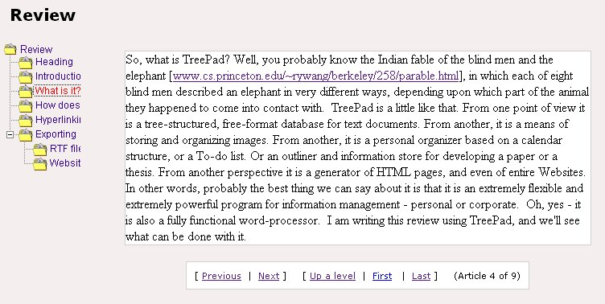

Creating a Website from a TreePad database is equally simple. File->Export->Subtree->To Website leads to a pop-up menu that allows you to format the Webpage. I think this is essential, because the default page setup assumes full-screen use of the browser and the settings may be absolute (frame width in pixels) or relative (percentage of browser width). The process is rapid: it took only about six seconds to produce a Website for this review, up to this point. The figure below shows a page from the site:
